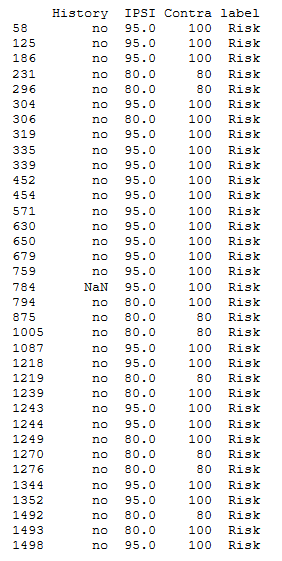
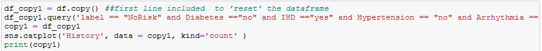
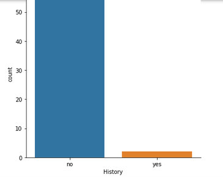
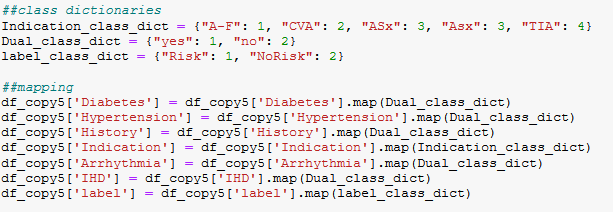
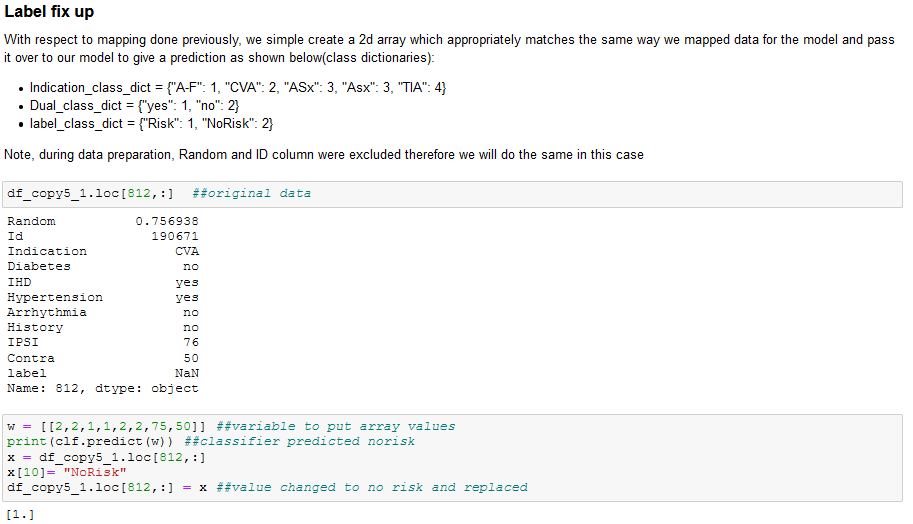
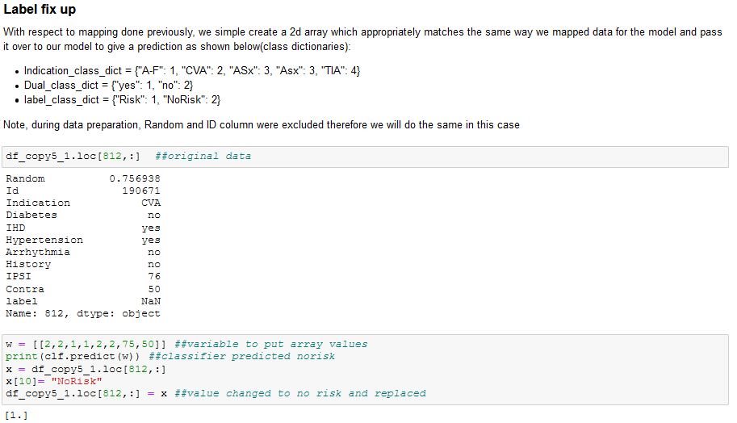

Datamining: Determining patient risk using Datamining and AI.
Project overview and inspiration.
This project is part of the coursework module Datamining and decision systems. The goal of this project is to use elements of data mining from cleaning to model evaluation using CRISP-DM(CRoss Industry Standard Process for Datamining) methodology to determine mortality rate of patients. The life-cycle of CRISP-DM methodology consists of:
- Business understanding: Initial phase of the project whereby the project success criteria and goal is established. In this case,the project is considered a success if the resultant model gives an optimal classification of patient mortality.
- Data Understanding: Data quality issues are identified within the provided data to mine.
- Data Preparation: Necessary data cleaning techniques and data transformation are applied so that the machine learning model can easily digest the data.
- Modelling: Different machine learning techniques are applied to the data provided and are gauged as to which performed best based on model performance.
- Evaluation: After model is chosen, a coverage is given as to why the model best fits the project.
Data Preparation and Cleaning.
Data provided had inconsistencies as is the characteristics of real-world data. The data provided was in a tabulated format and the inconsistencies encountered were
that some rows provided either contained empty data or data that was in the provided cell was not in an agreeable format. An example of unclean data provided for the project can be demonstrated as shown
in the image below:

Two cleaning methods were used to solve this issue. One of the methods used was through using queries. Whereby, while utilizing Pandas library, a user-generated query is created to sift through
the data to obtain information similar to the unavailable data. An example code snippet is as shown below:

Using Seaborn, data obtained is then converted into a graph. The value with the highest frequency in the graph is more likely to be the best choice to replace the NaN value. An example
graph generated from the query can be shown below. The highest value frequency is seen to be no therefore the most suitable value to fill the NaN value is no.

The second method involves using KNN(K Nearest Neighbour) to determine the best value to fill in NaN values. Necessary data pre-processing is first done which converts the data into values
which can be taken in by the KNN model as the KNN model cannot directly take in strings. This process is done through mapping. Mapping in this case is where strings are converted
integers. This can be demonstrated in the code snippet below:

The model is then trained by assigning desired features and labels(feature in the data that the model is meant to predict) and fed the transformed data to give a numerical prediction which represents the mapped data as shown below:
Training and labelling example snippet
 KNN classifying/prediction example snippet

KNN classifying/prediction example snippet

Model Selection and evaluation.
3 models were used which were:
- Logistic Regression.
- Multi-layer perceptron.
- Decision Trees.
Libraries Used.
The libraries used for the project are:- Seaborn.
- Pandas.
- SKlearn.
- Matplotlib.
Resources.
Original source code and data trained on can be found here